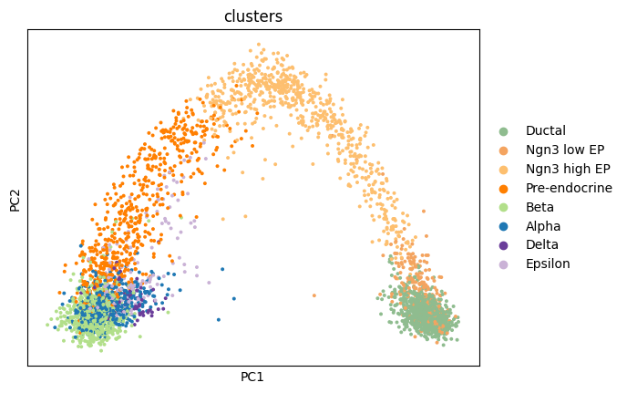
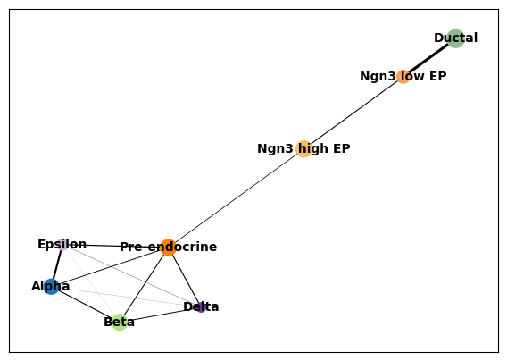
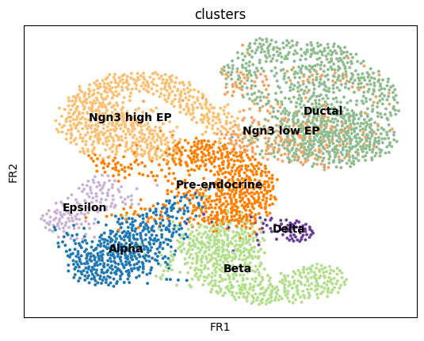

import numpy as np
import pandas as pd
import matplotlib.pyplot as pl
from matplotlib import rcParams
import scanpy as sc
import scvelo as scv
import scipy
import numpy as np
import matplotlib.pyplot as plt
import warnings
warnings.simplefilter(action="ignore", category=Warning)Trajectory Inference and Pseudotime
Download Presentation: Pseudotime Trajectory Inference
This notebook is partially adapted from the PAGA tutorial here: tutorial
Loading libraries
Reading data
First, we will load a dataset on pancreatic endocrinogenesis from a recent study:
adata = scv.datasets.pancreas()
adataAnnData object with n_obs × n_vars = 3696 × 27998
obs: 'clusters_coarse', 'clusters', 'S_score', 'G2M_score'
var: 'highly_variable_genes'
uns: 'clusters_coarse_colors', 'clusters_colors', 'day_colors', 'neighbors', 'pca'
obsm: 'X_pca', 'X_umap'
layers: 'spliced', 'unspliced'
obsp: 'distances', 'connectivities'This dataset contains single cells from very early in mouse development at multiple cell stages. Given that we know the exact temporal ordering of the cells, this dataset is ideal for demonstrating the purpose of trajectory inference and pseudotemporal ordering of single cells.
adata.obs["clusters"].value_counts()clusters
Ductal 916
Ngn3 high EP 642
Pre-endocrine 592
Beta 591
Alpha 481
Ngn3 low EP 262
Epsilon 142
Delta 70
Name: count, dtype: int64Exercise 1: We must first quickly perform the standard steps of normalization, log-transformation, and PCA on the dataset. Can you do this using the functions you have learned to use in the previous exercises, and then plot the first two PCs, colored by the clusters metadata?
# your code here
Numerous trajectory inference methods, including PAGA, are graph-based. To obtain such a needed graph, we need to examine the nearest neighbors of each cell. Let’s compute the neighborhood using 50 nearest neighbors and then embed the results on a UMAP.
sc.pp.neighbors(adata, n_pcs = 30, n_neighbors = 50)
sc.tl.umap(adata, min_dist=0.4, spread=3)sc.pl.umap(adata, color = ['clusters'],
legend_loc = 'on data', edges = True)Run PAGA
Use the ground truth cell types to run PAGA. First we create the graph and initialize the positions using the umap.
# use the umap to initialize the graph layout.
sc.tl.draw_graph(adata, init_pos='X_umap')
sc.pl.draw_graph(adata, color='clusters', legend_loc='on data', legend_fontsize = 'xx-small')WARNING: Package 'fa2' is not installed, falling back to layout 'fr'.To use the faster and better ForceAtlas2 layout, install package 'fa2' (`pip install fa2`).sc.tl.paga(adata, groups='clusters')
sc.pl.paga(adata, color='clusters', edge_width_scale = 0.3)
Embedding using PAGA-initialization
We can now redraw the graph using another starting position from the paga layout. The following is just as well possible for a UMAP.
sc.tl.draw_graph(adata, init_pos='paga')WARNING: Package 'fa2' is not installed, falling back to layout 'fr'.To use the faster and better ForceAtlas2 layout, install package 'fa2' (`pip install fa2`).sc.pl.draw_graph(adata, color=['clusters'], legend_loc='on data')
Gene changes
We can reconstruct gene changes along PAGA paths for a given set of genes
By looking at the different know lineages and the layout of the graph we define manually some paths to the graph that corresponds to specific lineages.
# Define paths
paths = [('beta', ['Ductal', 'Ngn3 low EP', 'Ngn3 high EP', 'Pre-endocrine', 'Beta']),
('alpha', ['Ductal', 'Ngn3 low EP', 'Ngn3 high EP', 'Pre-endocrine', 'Alpha']),
('delta', ['Ductal', 'Ngn3 low EP', 'Ngn3 high EP', 'Pre-endocrine', 'Delta']),
('epsilon', ['Ductal', 'Ngn3 low EP', 'Ngn3 high EP', 'Pre-endocrine', 'Epsilon'])]
adata.obs['distance'] = adata.obs['dpt_pseudotime']Then we select some genes that can vary in the lineages and plot onto the paths.
sc.tl.rank_genes_groups(adata, "clusters", method="t-test", n_genes=10)pd.DataFrame(adata.uns["rank_genes_groups"]["names"])| Ductal | Ngn3 low EP | Ngn3 high EP | Pre-endocrine | Beta | Alpha | Delta | Epsilon | |
|---|---|---|---|---|---|---|---|---|
| 0 | Spp1 | Spp1 | Neurog3 | Map1b | Pcsk2 | Cpe | Rbp4 | Ghrl |
| 1 | Dbi | Dbi | Btbd17 | Fev | Rbp4 | Tmem27 | Hhex | Isl1 |
| 2 | Cldn3 | Sparc | Sox4 | Hmgn3 | Mafb | Pcsk1n | Hmgn3 | Rbp4 |
| 3 | Mgst1 | Mgst1 | Mdk | Bex2 | Sec61b | Tspan7 | Isl1 | Bex2 |
| 4 | Anxa2 | 1700011H14Rik | Gadd45a | Ypel3 | Cpe | Meis2 | Fam183b | Fam183b |
| 5 | Bicc1 | Cldn3 | Smarcd2 | Chga | Gng12 | Gpx3 | Hadh | Maged2 |
| 6 | Krt18 | Anxa2 | Btg2 | Emb | Pcsk1n | Fam183b | Arg1 | Cck |
| 7 | Mt1 | Clu | Tmsb4x | Cpe | Rap1b | Slc38a5 | Sst | Anpep |
| 8 | Clu | Vim | Hes6 | Cryba2 | Tuba1a | Slc25a5 | Gpx3 | Card19 |
| 9 | 1700011H14Rik | Mt1 | Cd63 | Glud1 | 1700086L19Rik | Hmgn3 | Dlk1 | Arg1 |
gene_names = ["Spp1", "Dbi", "Cldn3", "Sparc", "Mgst1", "Cldn3", "Neurog3", "Btbd17", "Sox4",
"Map1b", "Fev", "Hmgn3", "Bex2", "Sec61b", "Tuba1a", "Meis2", "Pcsk1n", "Sst", "Arg1",
"Rbp4", "Hhex", "Ghrl", "Isl1", "Rbp4", "Bex2"]_, axs = pl.subplots(ncols=4, figsize=(16, 8), gridspec_kw={
'wspace': 0.05, 'left': 0.12})
pl.subplots_adjust(left=0.05, right=0.98, top=0.82, bottom=0.2)
for ipath, (descr, path) in enumerate(paths):
_, data = sc.pl.paga_path(
adata, path, gene_names,
show_node_names=False,
ax=axs[ipath],
ytick_fontsize=12,
left_margin=0.15,
n_avg=50,
annotations=['distance'],
show_yticks=True if ipath == 0 else False,
show_colorbar=False,
color_map='Greys',
groups_key='clusters',
color_maps_annotations={'distance': 'viridis'},
title='{} path'.format(descr),
return_data=True,
use_raw=False,
show=False)
pl.show()Diffusion pseudotime
We can also define pseudotime at the level of the cells. Here we need to choose a “root” cell for diffusion pseudotime, which we do from the Ductal cells.
adata.uns['iroot'] = np.flatnonzero(adata.obs['clusters'] == 'Ductal')[0]Exercise 2: Next, use the sc.tl.diffmap and sc.tl.dpt functions to estimate a pseudotime. What does each of these functions specifically do?
Visualize the results on the published embedding. You need to restore this because it was overwritten in your analyses above.
adata.obsm["X_umap"] = scv.datasets.pancreas().obsm["X_umap"]
sc.pl.umap(adata, color=['clusters', 'dpt_pseudotime'], cmap=plt.cm.Spectral, wspace=0.2)